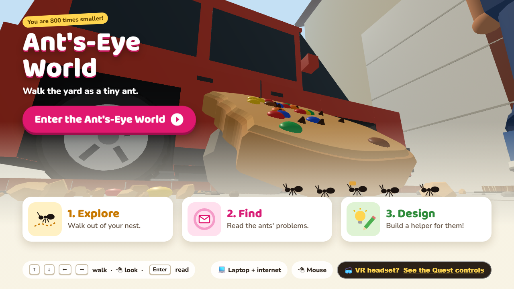
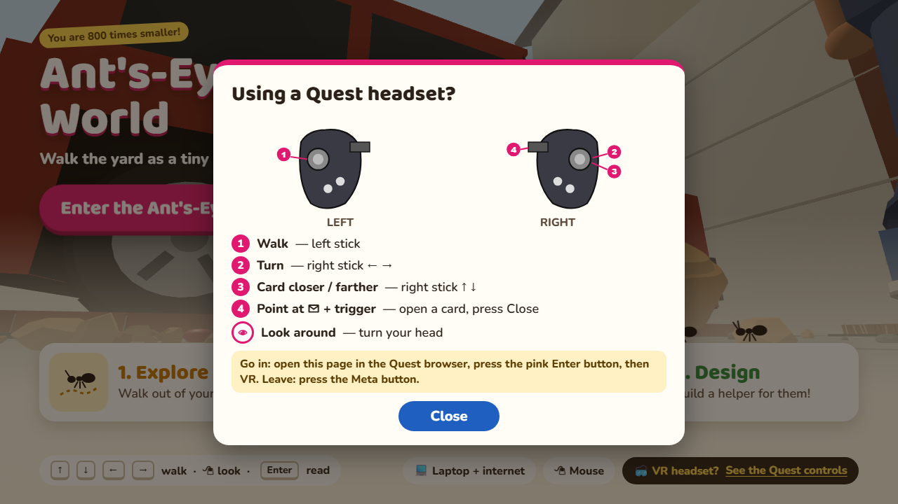

시작 페이지(index.html) 위에 그려 넣은 시안 (글은 영어) · 프로젝트 파일은 아직 바꾸지 않음

① 오른쪽 아래 검은 버튼지금 있는 "VR headset = feel like a real ant!" 자리를 버튼으로 바꿈: "VR headset? See the Quest controls" (밑줄). 페이지 모양은 그대로, 새 자리 차지 없음.

② 누르면 뜨는 안내판헤드셋 안 안내판과 같은 그림(왼손·오른손 컨트롤러, 번호 1~4) + 같은 설명 5줄. 아래 노란 줄: 들어가는 법(Quest 브라우저에서 이 페이지 → 분홍 Enter 버튼 → VR)과 나가는 법(Meta 버튼). Close, Esc, 바깥 클릭으로 닫힘.
안내판이 열려 있을 때 Enter 키를 누르면 월드로 넘어가지 않고 안내판만 닫히게 함 (지금은 이 페이지에서 Enter = 월드로 들어가기). 좁은 화면(휴대폰 크기)에서는 안내판이 화면 안에 맞게 줄어들고 스크롤됨. 월드(world.html)와 헤드셋 안은 바뀌지 않음.
정할 것: 이 자리(오른쪽 아래 검은 버튼)로 할지, 아니면 분홍 "Enter" 버튼 바로 아래에 작은 글자 링크로 둘지.